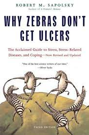

Before the pandemic I used to play 2 instruments, the trumpet and clarinet. I preferred playing the
clarinet as I liked the sound of it over a trumpet
My harry potter house is Ravenclaw
I live by the phrase "Learning for the sake of learning"
I want to know as much as I can, to me it doesnt matter how impractical or practical something
I learn is, I just find joy in knowing things.
If I could have one superpower it would be to remember everthing I come in contact to very accurately
Three of my idols are: Juana Inés de la Cruz, Stephan Hawking, and Hisako Koyama
Juana Inés de la Cruz, born in 1648, was a Mexican writer, philosopher, composer,poet as
a well as a nun , I really look up to her passion for learning and education even though her being
a women really made it hard to do what she liked. I strive to be more like this woman as to me she is
the eptmome of strengh and intelligence.
Hisako Koyama was a Japanses Astronomer born in 1916, she was known for drawing detailed illustrations
of blemishes on our sun(sunspots), she drew nearly 10,000 solar sketeches in her lifetime! During WWII
Koyama would use city-wide air-raid blackouts as opportunities to set up a futon in her yard and make
these celestial observations.
The next book on my reading list is: Why Zebras dont get Ulcers by Robert Sapolosky
I really liked watching Robert Sapoloskys lectures on human behaviour, and this book is about stress and how it affects
us humans so I figures it would be a good read.

My favourite TV show is Euphoria
Some places I really want to visit is Harrisons cave, Stone Henge, and Thailand
The most recent book ive read is Black Boy by Right richard
This book has given me a really good prespective on different types of prejudice,it was an interesting
read and I gained a lot from it, I would definetly recommend anyone to read this